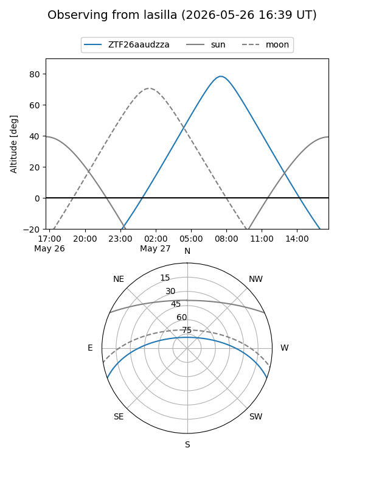
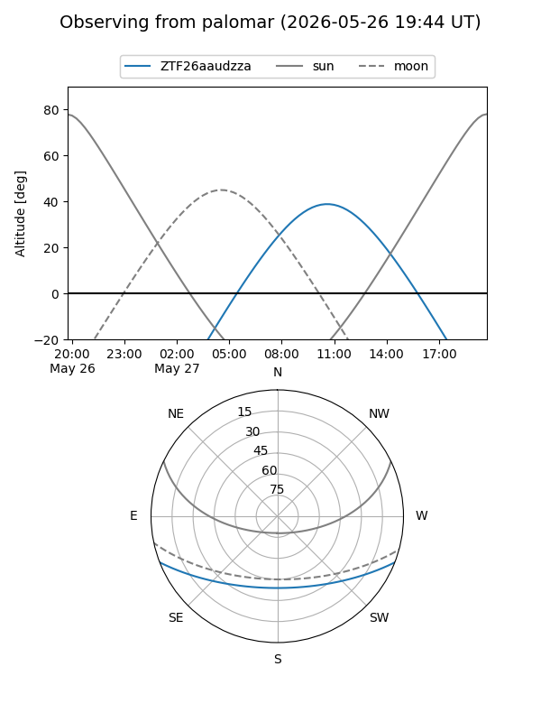

ZTF26aaudzza
Target ZTF26aaudzza at 2026-05-26 11:04
Aliases and brokers:
lsst-FINK: link
lsst-Lasair: link
lsst-ALeRCE: link
ztf-FINK: link
ztf-Lasair: link
ztf-ALeRCE: link
alt names
ZTF26aaudzza (ztf,fink_ztf)
Coordinates:
equatorial (ra, dec) = 286.8023,-17.81687
equatorial (HMS+DMS) = 19:07:12.54,-17:49:00.73
galactic (l, b) = (18.6111,-11.40722)
Flags:
Photometry:
last ztfg=20.11
1 ztfg detections
Lightcurve
Visibility


Additional plots